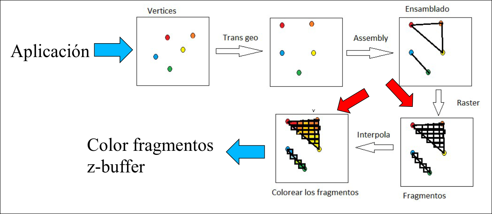
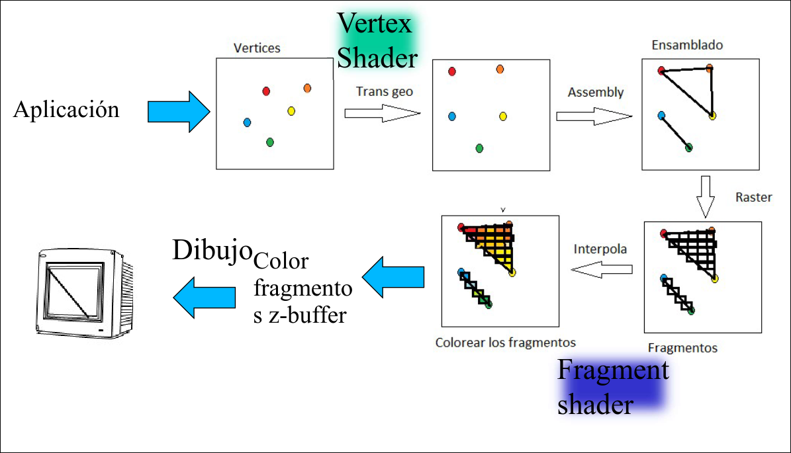
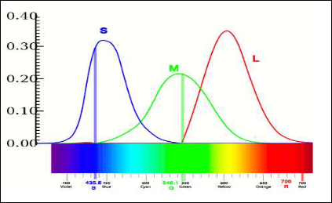
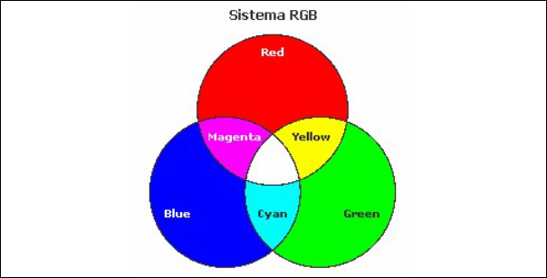
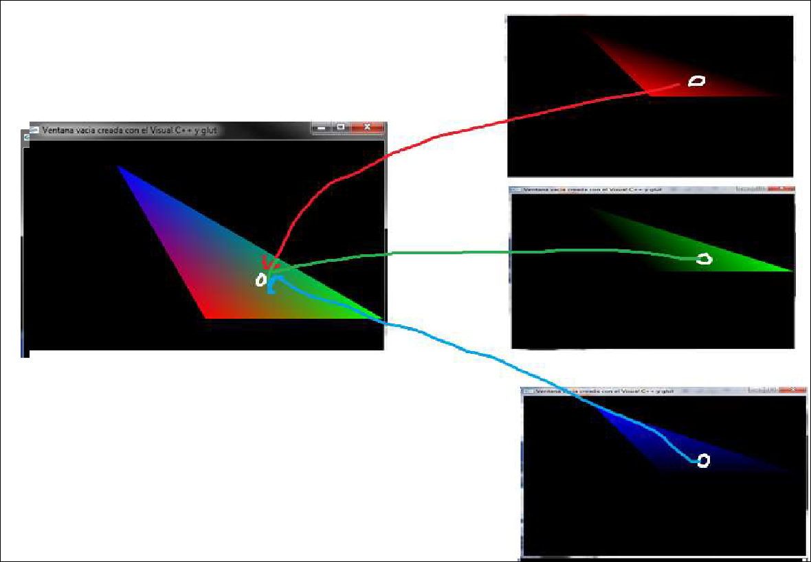
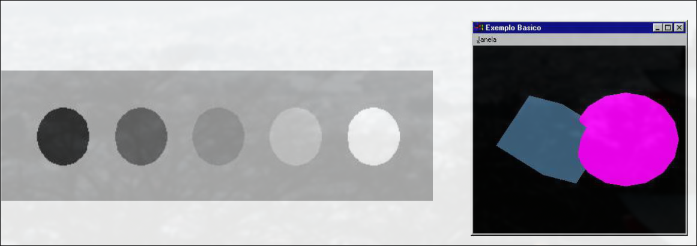
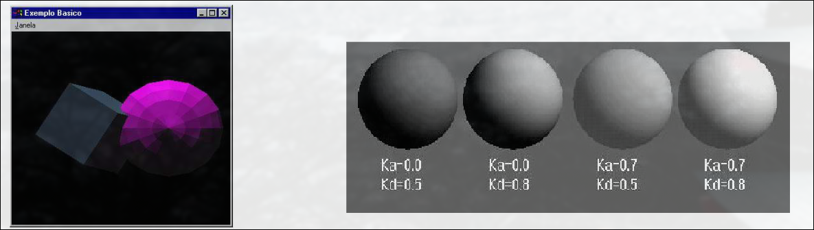
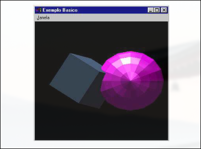
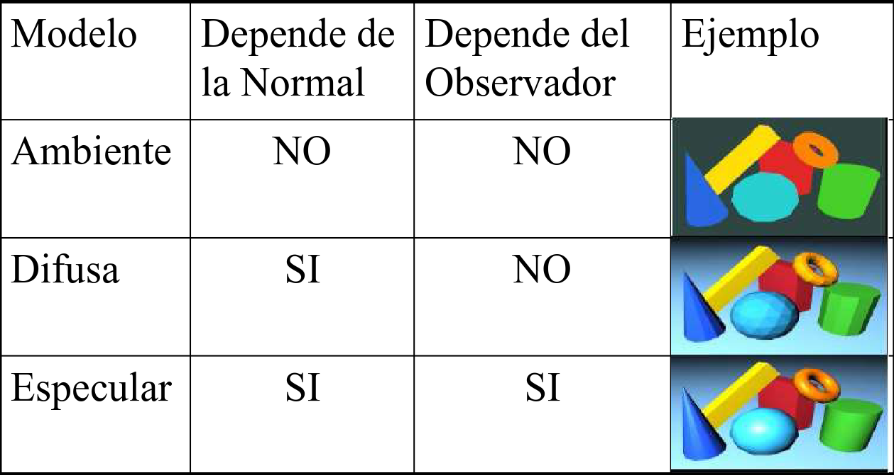

COGA · curso 2
5. Iluminación · COGA
Una vez realizado el ensamblado de vértices, se pasa al proceso de rasterizado, en el que se transforman los objetos que se van a proyectar en una matriz de píxeles que se mostrarán por pantalla. Así se obtiene la correspondenciade los puntos de los objetos con los puntos de la pantalla. Esta información compone un fragmento.
En la pipeline fija (OpenGl 1.2) hay poco control sobre el proceso de rasterizado e interpolación .

En el retained mode (Opengl 3.3) el fragment shader permite trabajar a muy bajo nivel sobre los fragmentos.

5.1 La Luz
La luz es una onda electromagnética que es percibida por el ser humano con un color determinado por su frecuencia o una suma de frecuencias. El conjunto de las frecuencias o longitudes de onda se llama espectro.
5.1.1 Caracterización Humana de la Luz
En el ojo humano hay dos tipos fundamentales de detectores:
- Bastones: células fotorreceptoras especializas en la visión nocturna que responden a la luminosidad, por lo que no distinguen colores. Tienen su máxima sensibilidad en la luz verde.
- Conos: células fotorreceptoras responsables de la visión diurna y la percepción del color. Hay 3 tipos, cada uno sensible a distintos colores:
- Rojos o conos-L: longitudes de onda largas
- Verdes o Conos-M: longitudes de onda medias.
- Azules o Conos-S: longitudes de onda cortas. Son más sensibles a la luz que las demás
El espectro de la intensidad luminosa, en función de la longitud de onda
Por esta razón, en las imágenes de síntesis se caracteriza un color por medio de sus componentes RGB. Existen modelos más precisos que realizan una discretización mucho más fina del espectro luminoso.

5.1.2 Teoría del Color: Colores Aditivos
La teoría de los colores aditivos se basa en la combinación de luz para crear diferentes colores. En esta teoría los tres colores primarios son rojo, verde y azul. La suma de estos colores permite crear todos los demás.
- La mezcla de dos colores primarios en proporciones iguales produce colores secundarios
- La mezcla de los tres colores primarios en intensidades máximas produce luz blanca.
- La ausencia total produce negro
En OpenGl los colores de los vértices se especifican con glCOlor3f(R,G,B), con valores para los componentes RGB en un rango [0,1] o [0,255]. OpenGl usa la síntesis aditiva porque los monitores y pantallas funcionan emitiendo luz en estos tres colores primarios.

5.1.3 Interpolación del Color
En Opengl, se interpola el color de las caras a partir del color de los vértices que las forman. Por ejemplo, para obtener la siguiente imagen, se dibujan 3 triangulos y la intensidad final es la suma de los tres.

5.2 Modelos de Iluminación
Hay dos grandes tipos de modelos de iluminación:
-
Locales: sólo consideran las características inmediatas del punto y su entorno cercano, sin tener en cuenta las interacciones complejas de la luz con otros objetos de la escena. Se utilizan en aplicaciones donde prima la velocidad de renderizado. El más clásico es el modelo de Phong.
-
Globales: consideran la escena en conjunto y las interacciones complejas de la luz en toda la escena, incluyendo los efectos indirectos entre objetos. Se utilizan en aplicaciones donde prima la calidad, porque aunque son más lentos, los resultados son mejores.
5.2.1 Modelo Local de Iluminación
Los cálculos se realizan en función de:
-
Fuentes de luz, caracterizadas por:
- Posición
- Intensidad y color
- Número de luces
- Distribución luminica: uniforme, focalizada, direccional, etc.
- Geometría: puntual, esférica, lineal, etc.
-
Objetos, caracterizados por:
- Distancias: al observador y a la fuente de luz.
- Material / Propiedades ópticas: transparencia, refracción, etc.
- Cromaticidad: color superficial propio
- Interacción lumínica con otros objetos de la escena
-
Observador, caracterizado por:
- Dirección de observación: cálculo de la intensidad
5.2.2 Modelo de Iluminación Simple
Resumiendo lo explicado anteriormente, la iluminación en un punto de una escena puede representarse mediante la siguiente función:
Donde:
: Intensidad luminosa observada en el punto pp. : Punto donde se calcula la iluminación. : Posición del observador. : Modelo geométrico y material de los objetos. : Modelo geométrico y cromático de la luz.
Para simplificar el modelo, se pueden asumir ciertas condiciones:
- Las fuentes de luz son puntuales (pequeñas y redondas).
- Los objetos son opacos y no emiten luz propia.
- No existen inter-reflexiones: la luz no rebota de un objeto a otro.
- Los objetos no generan sombras entre sí.
5.2.3 Modelo de Iluminación de Phong
El modelo de phong es un modelo empírico de iluminación local caracterizado por usar fuentes de luz puntuales y por que los objetos (no fuentes de luz) no emiten luz.
Luz Ambiental
Es una luz no direccional no identificable. Su efecto solo depende de su color y del color del objeto. Su variación implica cambios uniformes en la iluminación de los objetos.
No genera sombras ni matices de color. Indice sobre todas las partes del objeto por igual Muestra los objetos como siluetas.
Donde:
: Intensidad ambiental en todo punto del espacio. : Coeficiente de reflexión ambiental del objeto (entre 0 y 1). Un valor de 1 significa que el objeto refleja toda la luz ambiental.

### Luz Difusa o Luz Lambert Está asociada a un **foco de luz**. Su variación implica cambios de intensidad o de posición del foco. Genera sombras y matices de color en función del ángulo con el que incide en la superficie.Proviene de una dirección concreta y es reflejada en todas direcciones según la ley de Lambert, afectando aquellas partes del objeto en las que incide.
Ley de Lambert: "La componente difusa de la luz reflejada por una superficie el proporcional al coseno del ángulo de incidencia con la normal de la superficie"
Donde
: Intensidad de la fuente de luz. : Coeficiente de reflexión difusa del material (entre 0 y 1). : Ángulo de incidencia entre la normal y la dirección de la luz (entre 0° y 90°). : Vector normal a la superficie (unitario). : Vector de iluminación (unitario).

Luz Especular o Luz de Phong
Está asociada a un foco intenso de luz. Se usa en objetos con brillo, en extremos en un espejo. Su variación está asociada a cambios de intensidad, de posición del foco y de punto de vista.
Proviene de una dirección concreta y depende de la posición del observador y delas propiedades del objeto. Está asociada a objetos brillantes o pulidos: en el caso ideal, con la luz reflejada exactamente en el ángulo incidente, produce un espejo.
- Superficies perfectas: el rayo indicente y el reflejado son coplanares
- Superficies imperfectas: la luz se refleja dentro de un patrón tridimensional de reflexión. Hay luz fuera del plano y el ángulo ideal de reflexión Las reflexiones especulares suele ser del mismo color que la fuente de luz.
Se calcula con la ecuación:
Donde:
: Intensidad de la fuente de luz. : Coeficiente de reflexión especular (entre 0 y 1). Depende del material del objeto : Exponente de brillo (1 color mate e inf espejo). : Vector de reflexión de la luz. : Vector que apunta al observador.

Luz Emisiva
Da apariencia de que el objeto emite luz.
5.3 Modelo Global de Iluminación Simple
Otros efectos:
- Atenuación: no desestimar la atenuación de la luz con distancia al observador
- Múltiples fuentes: para tener varias fuentes en cuenta sólo hay que sumar sus efectos.
- Color: para tener en cuenta los tres colores hay que triplicar las expresiones:
5.4 Resumen
